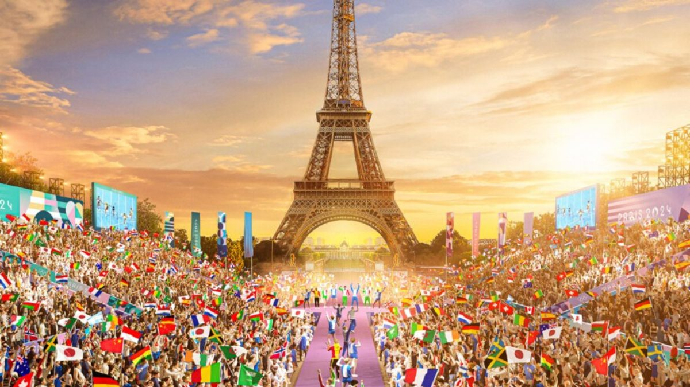
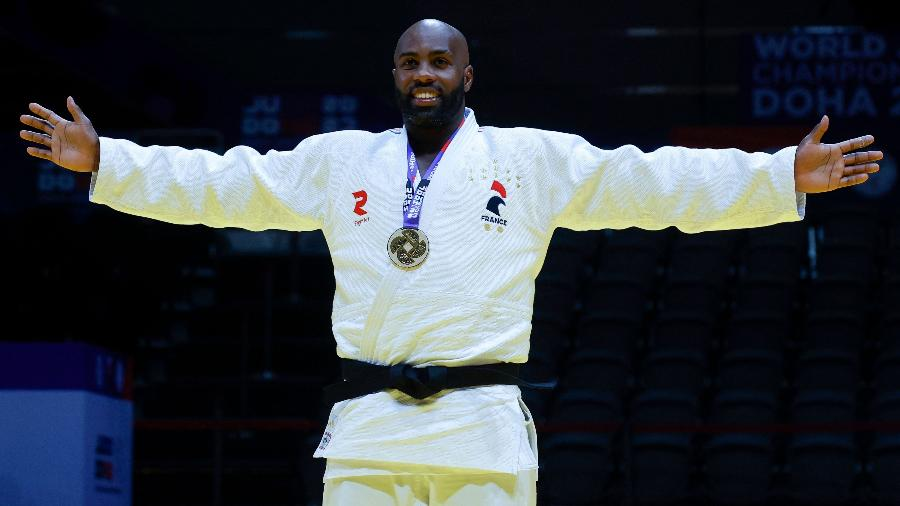

As Olimpíadas de Paris 2024 serão realizadas entre os dias 26 de julho e 11 de agosto. A capital
francesa já foi sede dos Jogos Olímpicos em outras duas edições, em 1900 e 1924. O evento de
abertura será realizado de forma inédita fora de um estádio; a solenidade acontecerá no Rio
Sena.

atletas
Michael Phelps
Ele é um judoca francês que tem dominado a categoria dos pesos pesados, ganhando múltiplas medalhas
de ouro em Jogos Olímpicos e campeonatos mundiais.
Marta Vieira da Silva
Conhecida apenas como Marta, ela é uma das jogadoras de futebol mais icônicas do Brasil e tem sido
uma presença constante nas Olimpíadas, além de ser uma estrela do futebol feminino mundial.
Teddy Riner

Ele é um judoca francês que tem dominado a categoria dos pesos pesados, ganhando
múltiplas medalhas de ouro em Jogos Olímpicos e campeonatos mundiais.
Modalidadesa Esportivas
Atletismo
O atletismo é uma das modalidades mais tradicionais dos Jogos Olímpicos, incluindo corridas, saltos e
lançamentos. Em Paris 2024, o atletismo promete grandes performances e novos recordes.
Natação
A natação é uma das modalidades mais emocionantes, com competições em diferentes estilos e
distâncias. Os atletas terão a chance de mostrar suas habilidades em piscinas de última geração.
Ginástica Artística
A ginástica artística é conhecida por suas performances impressionantes e desafiadoras. Em Paris
2024, veremos atletas se destacando em provas de solo, barras assimétricas e muito mais.
Boxe
O boxe é um esporte olímpico desde os Jogos Olímpicos de Saint Louis, Estados Unidos, em 1904. No
entanto, a sua prática é bastante antiga, uma vez que há registros de lutas, realizadas como
divertimento ou autodefesa, ainda na Pré-história.
Futebol
O surgimento do futebol em Jogos Olímpicos aconteceu na edição de 1900, em Paris, apenas como exibição,
com clubes representando os países. Em 1904, nasceu a Federação Internacional de Futebol (Fifa) e, nos
Jogos seguintes – 1908, em Londres –, o esporte entrou definitivamente para o programa olímpico
Judô
O judô estreou no programa olímpico nos Jogos de Tóquio-1964, apenas como demonstração